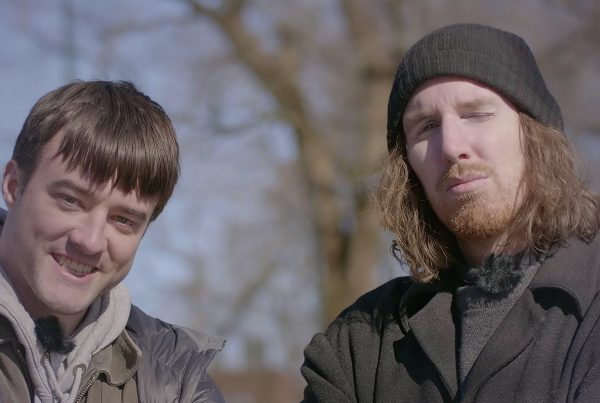

Vegar Tryggeseid er en komiker og forfatter mest kjent fra humorkollektivet Humornieu, og podcasten Gutta som flytta til Oslo. Men enda mer kjent er han for sin selvskrevne bok. Vegar Tryggeseid bruker absurd-humor og anti-humor både i podcastform, på TV og scene-show. Sammen med Morten Ramm lager han podcasten Må på behandling.
Vegar med vennhttps://www.humornieu.no/vegar-tryggeseid/
Hans stilige profil har sørget for at beundrere fra hele Norge ler seg skakk i hjel. Han har bidratt med mye godt og vondt til samfunnet opp igjennom tiden og årene. Hans deltagelse, og ikke minst seier, i "Ikke lov å le på hytta" har vist folk hva en ekte komiker er i stand til å gjøre.
Vegard har på seg colacaps https://www.humornieu.no/author/vegarjt/page/2/